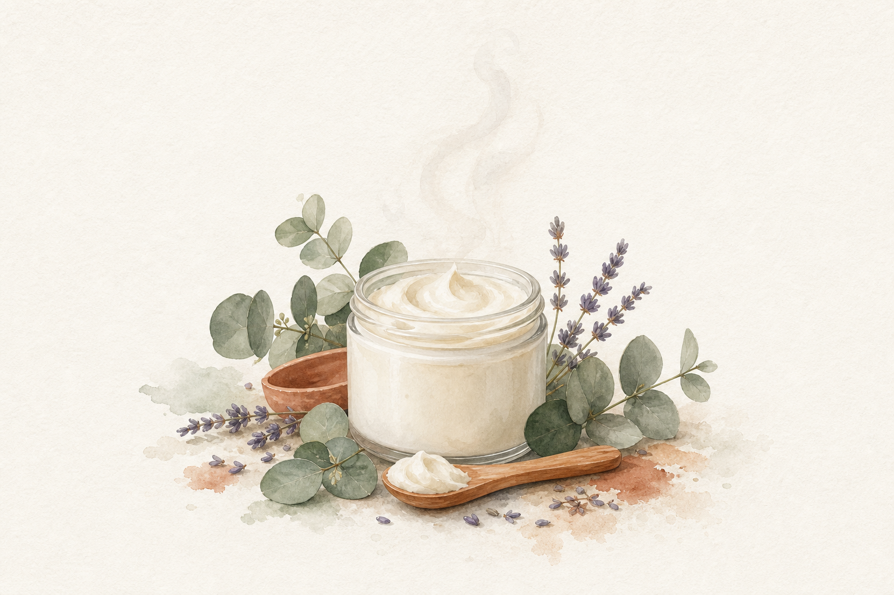
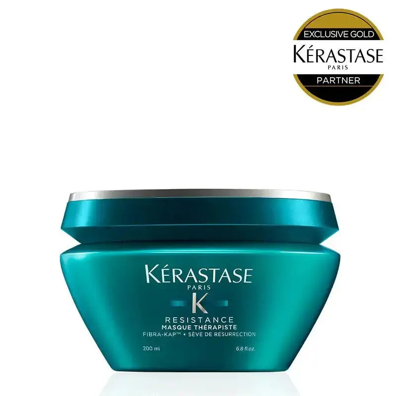

EMPATHY
こんな「毎日ちゃんとやっているのに」、心当たりありませんか。
- シャンプーも、洗い流さないケアも、仕上げのバームも変えた。それでも「特別に調子がいい日」は月に2〜3日しかない
- 毎日のケアで手を抜いた記憶はないのに、大事な日の朝にかぎって髪が言うことを聞かない
- 「集中ケア」と書かれたトリートメントを買ったのに、結果的に毎日使って1ヶ月で使い切ってしまった
- 週に1回のスペシャルケア、と決めたはずが、3週目には忘れて完全に途切れている
- 美容室でトリートメントをした翌日だけ髪が別人になるのに、その状態を自宅で再現できたことが一度もない
- 毎日のケアと、特別な日のケアを、ずっと"同じ1本"でまかなおうとしてきた自覚が、実はうっすらある
一つでも頷いたなら、あと3分だけ読み進めてほしいんです。
私自身、このシリーズで「洗う」「足す」「整える」を3回かけて見直してきました。第2弾でシャンプーを変え、第1弾で洗い流さないトリートメントを足し、第3弾で仕上げのバームを加えた。正直、日常のヘアケアとしては、かなり完成された状態になったと思っています。
でも、ある日ふと気づいたんです。「毎日が70点で安定した」だけで、「今日は95点」という日は、結局作れていない。毎日のケアを丁寧にすればするほど、平均点は上がる。けれど、上限は上がらない。──ここに、ずっと気づけていませんでした。

IF NOTHING CHANGES
正直に言うと、いちばん怖いのは「調子のいい日が少ないこと」そのものじゃありません。
「毎日ちゃんとやってるんだから、私の髪はこれが上限なんだ」と、天井を自分で決めてしまうことです。
毎日のシャンプーを変えた。洗い流さないケアも足した。仕上げも整えた。3工程まで見直したという達成感は、確かにあります。だからこそ、「ここまでやってこれなら、もうこれ以上は無理だな」と、静かに納得してしまう。
でも、半年後も、1年後も、たぶん同じです。毎日を丁寧に整えるだけでは、"平均"は上がっても"最高"は動かない。大事な予定の前日、鏡の前で「まあ、いつも通りか」とため息をつく。写真を撮られる日も、髪を後ろでまとめて逃げる。そうやって、「私の髪はこの程度」という前提が、じわじわ固まっていきます。
しかもこれ、お金の話でもあります。「集中ケア」「サロン級」と書かれた1本1,500〜2,500円のトリートメントを買っては、毎日使ってしまって1ヶ月で空にする。「まあ、こんなものか」と、また次の1本を買う。それを5本繰り返せば、1万円前後。毎日ケアと特別ケアを1本でまかなおうとしたぶん、"どちらにも振り切れていないケア"に、すでに払い続けていた、ということも珍しくありません。
そしてもう一つ。美容室でトリートメントをした翌日の、あの状態。「これが続けばいいのに」と毎回思うのに、次にその感覚を味わえるのは2ヶ月後の予約日。その間の60日を、ずっと"いつも通り"で過ごす。これは、髪の話であると同時に、「特別な自分でいられる日を、年に何日持てるか」という時間の話でもあります。
でも──足りなかったのは、毎日のケアの"質"でも"量"でもなかったんです。毎日のケアと、特別な日のケア。この2つの"役割"を分けていなかっただけ。それに気づけるかどうかが、次の半年、鏡の中に映るあなたを左右します。まだ間に合います。変えられるのは、今週のお風呂のうち、たった2〜3回からです。
THE TURN
そこでたどり着いたのが、「RE マスク セラピュート」でした。
ここで一つ、決定的なことに気づいたんです。第2弾で紹介したケラスターゼ「RE バン セラピュート」は、毎日使うシャンプーとして設計されています。ダメージレベル3〜4向けの処方ではあるけれど、"毎日使う前提"である以上、1回あたりの濃さには、どうしても上限がある。
これは「シャンプーの補修力が弱い」という話ではありません。むしろ逆です。毎日使っても髪や頭皮に負担をかけすぎないよう、あえてマイルドに設計されている。毎日使うものとして、それが正しい設計なんです。
美容師さんによく言われるのが、こんな話です。「毎日全力でケアするより、週に数回だけ"濃いケア"を挟むほうが、髪の状態は安定しやすい」。理由はシンプルでした。毎日使うアイテムは「続けられること」を優先して設計されている。一方、週2〜3回だけ使う集中ケアアイテムは、「その数回で最大限に働くこと」に振り切って設計されている。狙っている場所が、そもそも違うんです。
言ってしまえば、日常ケア(シャンプー・洗い流さないケア・仕上げ)が"守りのケア"。週2〜3回の集中マスクが"攻めのケア"。守りだけでも髪は保てます。でも、攻めを1つ挟むだけで、「あれ、今日髪の調子いいかも」という日を、意図的に作れるようになります。
私がこのマスクを信頼できると感じた理由は、大きく3つ。
週2〜3回に振り切って設計された"濃さ"
毎日使う前提のアイテムとは、そもそも役割が違う。「その数回で働くこと」を前提にした設計だから、日常ケアの延長線上にはない立ち位置です。
第2弾のシャンプーと同一シリーズ・同一レベル
「毎日のシャンプーは変えたけど、まだ物足りない」という人が、そのまま同じラインの上位ケアへ進める。ケアの設計思想が途中で分断されません。
口コミ4.8(20件)・マスク部門14位
第2弾で確かめたケラスターゼの信頼を、そのまま引き継げる。「毎日のシャンプーで納得できたブランドの、集中ケア版」という安心感は大きいです。
「毎日を全力で頑張るケア」から、「週2〜3回だけ濃くするケア」へ。1週間の中に"特別な日"を自分で作れるようになる、という選択肢です。
THE PRODUCT
ケラスターゼ ブロンドアブソリュ RE マスク セラピュート とは
フランス発のラグジュアリーヘアケアブランド、ケラスターゼ。その中で「RE セラピュート」は、カラー・ブリーチ・熱による濃いダメージ、切れ毛や枝毛が気になる髪──ダメージレベル3〜4に狙いを絞ったラインです。
第2弾で紹介した「RE バン セラピュート」がこのラインの"毎日のシャンプー"なら、この「RE マスク セラピュート」は、同じラインの"週2〜3回の集中ケア"にあたるアイテムです。

- タイプ
- 集中ヘアパック(インバス/週2〜3回のスペシャルケア)
- 価格
- ¥7,260(ALBUM ONLINE STORE・200g/¥36/g)
- 使うタイミング
- シャンプー後、タオルドライした髪へ。週2〜3回
- 向いている髪
- ダメージレベル3〜4(カラー・ブリーチ・熱による濃いダメージ、切れ毛・枝毛が気になる髪)
- 香り
- 爽やかなフローラルに、落ち着きのあるウッディ感を重ねたフローラルウッディ
- 口コミ評価
- 4.8(20件)/マスク部門 売れ筋ランキング14位
- シリーズ
- 第2弾「RE バン セラピュート」シャンプーと同一シリーズ・同一ダメージレベル
このマスクのいちばんの特徴は、「毎日の習慣を、増やさない」という点です。新しい工程を追加するのではなく、週の半分だけ、いつものトリートメントを"これに置き換える"だけ。毎日やるべきことが増えないから、「今日はやらなきゃ」という義務感が生まれません。
そして200gという容量。1回10g前後を目安にすると、およそ20回分。週2〜3回のペースなら、だいたい2ヶ月弱もつ計算になります。"毎日使うもの"としては高く感じる価格が、"週数回のスペシャルケア"として見ると、まったく違う数字に見えてくる──ここが、このアイテムの面白いところです。
WHY IT WORKS
「で、結局それの何がいいの?」に、飾らず正直に答えます。
毎日を全力で頑張るより、週に2〜3回だけ濃くする。これは、日常ケアを3工程ぜんぶ変えてきたからこそ、「役割を分ける」という考え方の効き方が分かった、私のいちばん正直な実感です。
WHY TRUST IT
正直に言うと、私は「有名だから」だけでは商品を信じないタイプです。
それでもこのマスクを紹介したいと思えたのは、こんな背景があるからです。
「ダメージレベル」という明確なものさしを前提にしている
レベル3〜4という具体的な基準に狙いを絞って設計されたライン。"なんとなくの集中ケア"ではなく、どこに向けた処方なのかがはっきりしています。
第2弾のシャンプーと同一シリーズという一貫性
毎日のシャンプー(RE バン セラピュート)と、週2〜3回のマスク。同じ設計思想の中で"守り"と"攻め"を分担している。別ブランドを継ぎ足すのではなく、ライン内で役割が完結している点は、地味ですが大きな信頼材料です。
口コミ評価4.8(20件)、マスク部門 売れ筋ランキング14位
件数はまだ多くありませんが、4.8という平均値は高水準。数あるケラスターゼのマスクの中で、ランキング上位に入り続けている点も判断材料になります。
サロン専売品を、公式通販でそのまま買える
今回紹介する ALBUM ONLINE STORE(株式会社オニカム運営)は、美容室専売品を扱う美容通販サイト。ケラスターゼの日本唯一の「GOLD公式パートナー」を公言しているお店です。第1弾から第4弾まで、ずっと同じお店。この一貫性も、シリーズを通して変わりません。
※感じ方には髪質・施術履歴・使用量による個人差があります。効果効能を保証するものではありません。
WHAT PEOPLE NOTICE
こんな使用感(声の傾向)
SNSやレビューでよく見かける声、そして私自身が使って感じたことを、盛らずに、そのまま整理してみます。
テクスチャについて
「こっくりと重めで、伸ばすとしっかり毛先に絡む」という声が多い印象。私自身も、いつものトリートメントより明らかに"密度がある"感触でした。少量では伸びにくいので、毛先中心にきちんと量を取るのがコツだと感じています。
洗い上がりについて
「すすいだ瞬間の指通りが、いつもと違う」という感想をよく見かけます。私も、翌朝のブラッシングのときに「あ、今日は引っかからないな」と気づく日がありました。
香りについて
爽やかなフローラルに、落ち着いたウッディが重なる香り。「甘すぎず、大人っぽい」という声が多いのも納得で、週2〜3回のケアの時間が、ちょっとした切り替えのスイッチになる感覚があります。
続けやすさについて
「毎日じゃないから、逆に続く」という声が印象的でした。毎日のトリートメントを"置き換える"だけなので、工程が増えない。「週の半分はこれ」と決めてしまえば、考える手間もありません。
使う量について
「思ったより早くなくなる」という声も見かけます。毛先中心に、根元を避けてきちんと量を使うタイプなので、ケチって薄く伸ばすより、必要な量を使って回数を守るほうが、納得感が出やすいと感じています。
もちろん、髪質も施術履歴も人それぞれ。だからこそ、「自分の髪ではどうか」を一度確かめてみる価値があるアイテムだと思っています。
※上記は一般的な使用感の傾向であり、効果を保証するものではありません。
FAQ
よくある質問
普通のトリートメントと、何が違うんですか?
毎日使ってはいけないんですか?
使う順番とタイミングを教えてください。
第2弾のRE バン セラピュート(シャンプー)を使っています。組み合わせて大丈夫?
第1弾のオラプレックスNo.6や、第3弾のTHE HAIR BALM 997と併用できますか?
¥7,260は、正直高くないですか?
どのくらいの期間もちますか?
カラーやブリーチの直後でも使えますか?
香りはどんな系統ですか?
効果には個人差がありますか?
まず1つだけ試したいのですが、それでも大丈夫?
どこで買えますか?
ABOUT THE PRICE
価格の考え方
RE マスク セラピュートは ¥7,260。このシリーズで紹介してきた3本(¥3,740 / ¥4,180 / ¥4,290)より、はっきり高い。これは正直に認めます。数字だけ見れば、いちばん高いアイテムです。
でも、比べる相手が違うんです。過去3本は、すべて「毎日使うもの」でした。毎日使うものは、毎日の負担で考える。だから4,000円前後という金額が基準になる。一方このマスクは、週2〜3回だけ使う"非日常のケア"です。毎日のケアと同じ物差しで測ると、話が合わなくなります。
200gで、1回10g目安なら約20回分。1回あたり、約363円。週2〜3回のペースなら、2ヶ月弱で使い切る計算になります。
ここで一度だけ、正直に振り返ってみてほしいんです。「集中ケア」「サロン級」と書かれた1本1,500〜2,500円のトリートメントを、これまで何本試して、そのうち何本を"毎日使って1ヶ月で"空にしましたか。5本なら、それだけで1万円前後。私はこの計算をして、正直ちょっと笑ってしまいました。"毎日ケアと特別ケアを1本でまかなおうとして、どちらにも振り切れなかったコスト"のほうが、よっぽど高くついていたからです。
そしてもう一つ。美容室のトリートメントメニューは、1回あたり数千円かかることも珍しくありません。その"特別な日の感覚"を、自宅で週2〜3回のペースで用意できるとしたら。高いか安いかは、値札だけでは決まりません。"毎日を70点で安定させる"だけでなく、"週に2〜3回、意図的に濃くする日を作れるか"。そこで考えたとき、¥7,260は、一度試してみる価値のある金額だと、私は思っています。
BEFORE YOU GO
安心して試すために
「7,000円超のヘアマスクって、通販で買って大丈夫なの?」その気持ち、よく分かります。私も最初はまったく同じでした。
今回紹介している ALBUM ONLINE STORE は、株式会社オニカムが運営する、美容室専売品を扱う美容通販サイトです。ケラスターゼの日本唯一の「GOLD公式パートナー」を公言しているお店なので、「美容室でしか買えない」と思っていたブランドを、公式に、自宅から手に取れます。第1弾のオラプレックス、第2弾・第4弾のケラスターゼ、第3弾のTHE HAIR BALM 997。4回ぜんぶ、ずっと同じお店です。
そして何より、いきなり4本すべてを揃える必要はありません。第1〜3弾で紹介した「洗う→足す→整える」の日常ケアを、まず一巡させる。そのうえで「もう一段だけ、髪の調子を底上げしたい」と思ったタイミングで、このマスクを足す。その順番でまったく問題ありません。
というより、この4本の中でいちばん最後に足すべきなのが、たぶんこのマスクです。毎日のケアが整っていない状態で週2〜3回だけ濃くしても、土台が追いつきません。逆に、日常ケアがすでに整っている人にとっては、これがいちばん分かりやすい"次の一手"になります。
大きく生活を変える買い物ではなく、「週の半分だけ、いつものトリートメントを置き換える」だけの、小さな一歩。毎日の工程が1つも増えないという気軽さこそが、続けられる理由になります。
※価格・在庫・配送などの詳細は、リンク先の販売ページの情報をご確認ください。
LAST WORD
「洗う」「足す」「整える」。3回かけて紹介してきた日常ケアは、これで完成しています。
でも、日常ケアは"守り"です。
毎日を70点で安定させる仕組みであって、「今日は特別に調子がいい」という日を作る仕組みではありません。
毎日を全力で頑張り続けて、「私の髪はこれが上限」と諦めたまま、また半年過ごすのか。それとも、週2〜3回だけ濃いケアを挟んで、"特別な日"を自分で作れるようにするのか。
小さな選択に見えて、大事な予定の前日に鏡を見たときの気分は、案外ここで変わります。そして、変えられるのは、いつだって"今週のうちの2〜3回"からです。
追伸
正直に言うと、このマスクも「魔法の1本」ではありません。どんなアイテムも、髪質や施術履歴、使用量によって感じ方は変わります。
それでも私がこの1つを紹介したいのは、「毎日ちゃんとやってるんだから、これが上限」と決めつけるのをやめられたからです。足りなかったのは、毎日のケアの質でも量でもなく、"毎日のケア"と"特別な日のケア"を、役割として分けるという考え方でした。
4回に分けて紹介してきましたが、この4つを全部揃える必要はまったくありません。市販品を何本も試して結果が出なかった人ほど、実は「毎日のケア」と「週数回の特別なケア」を、同じ1本でまかなおうとしていた。役割を分けるだけで、髪の調子は意外と安定します。
もし、毎日のケアはもう一通りやりきったのに、「特別に調子のいい日」だけがどうしても作れていないなら。足りない最後の1つは、たぶん"週2〜3回だけ濃くする日"です。今週のお風呂のうち、たった2〜3回から、確かめてみてください。